同一场景各三版 × 每版四张候选 · 图是 素材/ 下的相对路径，别把 html 单独拷走
定调规则：环境是庇护的屏走 C（高调明快），环境是敌人的屏走 B（电影感、暗）。 按这个规则四章的温度是往下走的 —— 黄州 C → 惠州 C → 定州 B → 儋州 B， 贬谪越深、光越狠，这条温度弧线本身就是叙事。
⚠ 新风格把自动量坐标的三个工具全打穿了：
measure_gilt.py（找暖框）、measure_plaques.py（环带亮度）、
measure_blank.py（直接找亮素面）在 fx-court-c-4 这块
肉眼可见又大又干净的空白匾上给出三个不同、且都不对的框。
原因：C 的织金回纹被降采样打碎、B 把主体压进暗部。所以 匾面.json 里 fx-* 的自动结果不要信，
下面这几组坐标是叠网格人工读出来的（tools/grid_overlay.py，精度约 ±0.01）。
| 图 | 可写面 x / y / w / h | 是什么 |
|---|---|---|
fx-court-c-4 | 0.33 / 0.07 / 0.35 / 0.15 含框 0.305/0.04/0.40/0.22 |
檐下那块织金回纹大匾的内素面，宽 0.35，是这批里最大的可写面，够放四字堂名 |
fx-stove-c-4 | 0.02 / 0.12 / 0.25 / 0.40 | 左侧那面被日照亮的素墙，几乎无细节；注意别压到挂着的蓑衣斗笠（x>0.27） |
fx-dan-b-3 | 0.30 / 0.12 / 0.40 / 0.30 或路中央 0.35/0.60/0.30/0.28 |
中间那片晒到发白的海雾，极低细节；但这里接近纯白，必须用深色字。 另：两侧那两面被吹平的空白布招（x 0.33–0.40 与 0.55–0.72，y≈0.52–0.64）是现成的"地名牌" |
调研那四条（明度范围／色相／光的故事／动）机制是对的，但要补成五条： 「key 定在哪」是独立的第五件事。按字面拉满得到的是 B —— 电影感、偏暗， 因为被当成正面例子的《极乐迪斯科》《Spiritfarer》本身都不是高调。 要「欢快明亮」必须额外锁死：整幅 key 提亮、暗部不许近黑、靠亮—更亮分层而不是黑—白。
但别一刀切全上 C：儋州那张 C 是热带明信片，好看，把"儋州是惩罚之地"讲没了； 所以环境是敌人的屏要留在 B。
硬约束三版都守住：下三分之一留一整片干净地面当叠字安全带， 只是要求它被照亮、带方向渐变与柔长影，不再平铺成死灰；匾／招幌／纸面一律空白，字走 HTML。
A 的问题：「只允许柔和的日光斜影渐变」把明度范围压平、光没有来源。
B：炉膛火做唯一热光源＋窗外冷光，两束在灶台交接；暗部近黑。
C 首选 1 或 4：同样的光与风，但整幅 key 提亮、暗部透亮不近黑 —— 这才叫欢快。
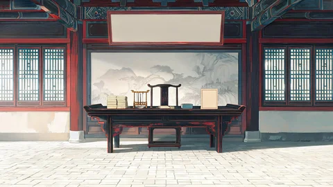
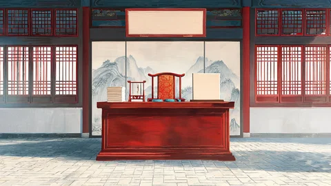
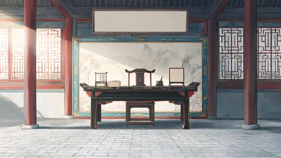
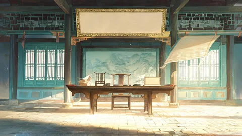
B 很美但读起来是空宅/夜里；C 首选 1 或 4：亮带落在青砖地上、匾框织金是画面最亮点，是「白天办公的衙门」。
⚠ C 的窗棂石青偏绿写太鲜，有点滑向手游原画，下一轮压回去一半。
这一屏选了 B，首选 3（已定）：地面烫到反光、热浪把海平线扭弯、一片干棕榈叶被风推着滚过路中央——儋州的酷热是消渴疾的对手，不该被美化。
C 是热带明信片，好看，但把「儋州是惩罚之地」这层讲没了。
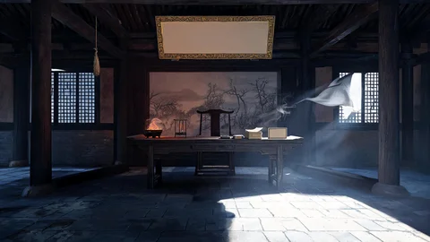
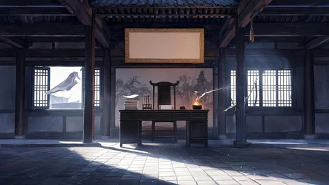
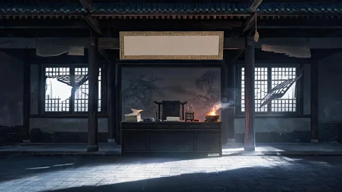
北方边镇、冬日冷阳：窗外一条偏冷的亮带，案角一只小炭盆是唯一的暖光，冷暖在砖地上交接出线；梁下与屋角近黑。风：破角窗纸往里吸、卷宗纸角掀起、炭上一缕细烟横倒。
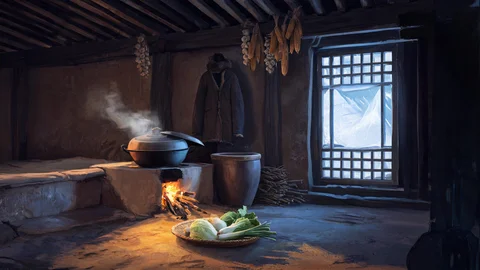
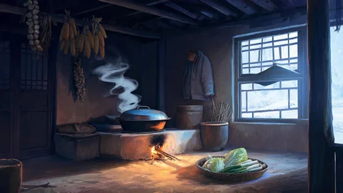
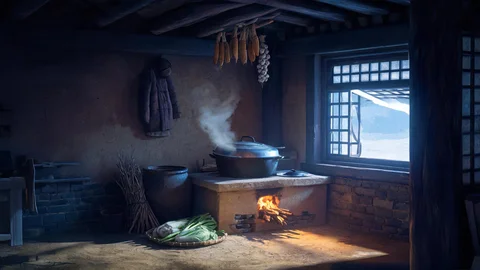
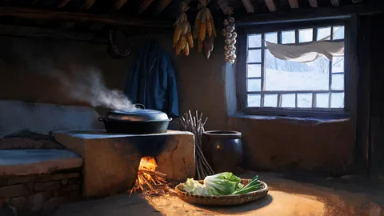
炕连灶、黑铁锅、梁上垂干玉米。雪地把冷蓝反射光整片送进来，灶口炭火是唯一的暖光，锅的迎光面橙、背光面青蓝——一锅上同时读到两个光源。
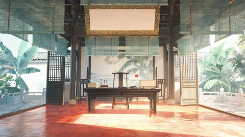
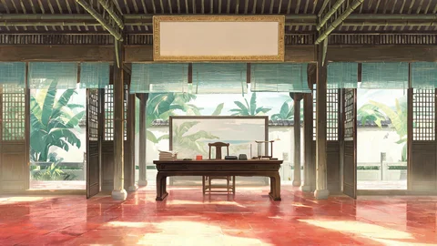
岭南开敞、竹帘白墙、门外芭蕉。上午太阳从敞开的门扑进来，红石板把光反弹上去、照亮桌底与椅背下沿，绿叶把一部分光滤成淡绿落在墙上。匾量到了：0.363/0.062/0.285/0.188（这批里唯一自动量准的）。
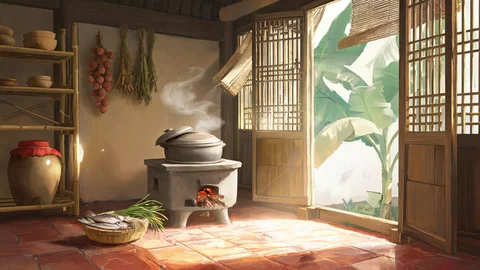
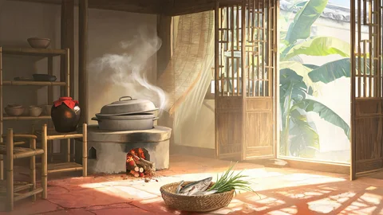
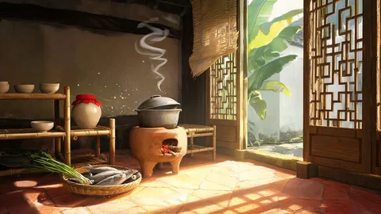
陶锅、荔枝柴、墙上一串干荔枝。湿红石地反亮，竹格门把光切成一条条斜影落在地上。
青石板＋布招幌＋远处空白照壁。江面把一道晃动反光弹上最近屋檐底，那一小块是画面最亮点；一面幌子被吹平、另一面只轻摆——三种速率在这里最清楚。